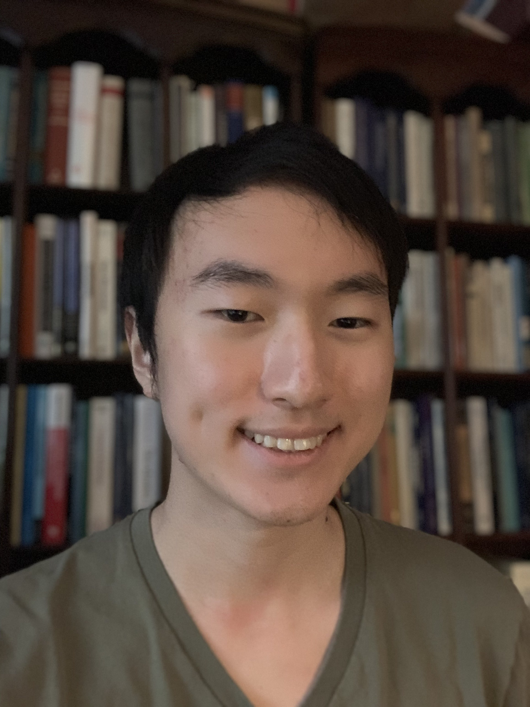

Hi, and welcome to my blog! My name is Daniel Yu and I'm a software developer with a passion for tinkering with embedded devices and low level systems. I'm currently studying CS @ Stevens Institute of Technology (class of 2025)!
I want this blog to be a way for me to reflect on my growth both as a person and as a developer, while also contributing my knowledge to others.

Like many other developers, I started my programming journey as a freshman in college. When I was younger I used to dream of writing novels as a fiction author, but in the end I decided that I would choose my path based off of what school I would enter. Ever since Stevens Institute of Technology accepted me, I decided to take advantage of my situation and dive headfirst into the world of computer science. Looking back, it was the best decision that I've made yet!
That isn't to say that I've given up on writing entirely. After all, you wouldn't be reading this if I had! I believe that there's a lot of common ground between writing software and writing stories that I would have never appreciated without coming from a background in literature.
So far, I've worked at companies such as Quantum Computing Inc., where I've written drivers interfacing with embedded devices using protocols like I2C. I've also done undergraduate research at Stevens Institute of Technology, having used machine learning techniques to study the correlation between attention and physical feedback from a brain-computer interface (BCI).
I'm always looking forwards to opportunities that expand my knowledge. I strive to use my experience to build projects that can benefit others and provide help to those who need it.